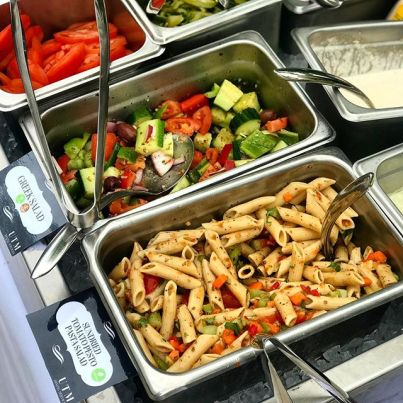

Written by Nayana Agrawal • Published on the UTM Wellness Blog • September 18, 2019
HOW TO EAT WELL IN UNIVERSITY
I think one of the first things I realized when I moved out of residence and into an apartment shared with my friends was that I had no idea how to feed myself. Of course, I do know how to cook a variety of foods, from pasta, to burritoes, to several Indian curries. It’s just that I never seem to have time to cook. However, I have eventually managed to develop a plan of sorts, which will also hopefully help you get some form of daily nutrition that’s better than bags of chocolates and chips. So here are my tips to eat well during university!
I. Meal Prep on Weekends
I can’t stress how important this one has been for me! The more meal prep you do over the weekends, the less hassle you’ll have when eating lunch and dinner for the next few days. Buy the groceries, prepare them, and chuck them in the freezer. That way, you only have to defrost and reheat food, saving precious time before classes and during dinner.
II. Try the Salad Bar in the Davis Building
Have you checked out the new, updated food court in Davis? It’s completely unrecognizable! It’s always a good idea to save up some money and buy food on campus to occasionally save yourself the hassle of packing lunch in the mornings. The salad bar in Davis is a great option for these occasions. It’s one of the healthiest and most cost efficient options available. You can get either a yogurt salad for breakfast, or one with plenty of vegetables, proteins, and grains for lunch. It’s definitely the go-to place for a quick and healthy meal on campus.
III. Purchase a UTM Meal Plan
Do you have too many time commitments to prepare your own food? Not that great at cooking? Prefer to just buy food on campus instead of going through the hassle of grocery shopping? Well, UTM provides student meal plans to both on and off residence students, so make sure you take advantage of this opportunity! You can get a 13% tax discount, which will definitely build up your savings over time.

IV. Visit a Dietitian
If you have any questions about nutrition, healthy eating, or how you can balance your diet, don’t hesitate to book an appointment with UTM’s dietitian through the Health and Counseling Centre! For quick tips and tricks you can also follow the @utmdietitian Instagram account. It’s a great way to get advice on maintaining your nutrition and health.
Even though cooking for yourself may seem scary and impossible at first, there are many resources on campus, which you can use to better your nutrition and reduce the effort it takes to prepare meals for yourself everyday. A healthy diet is necessary for your physical and mental wellness, and should definitely not be neglected. Hopefully one or more of the tips or resources above will help you in planning your food journey for your university years!